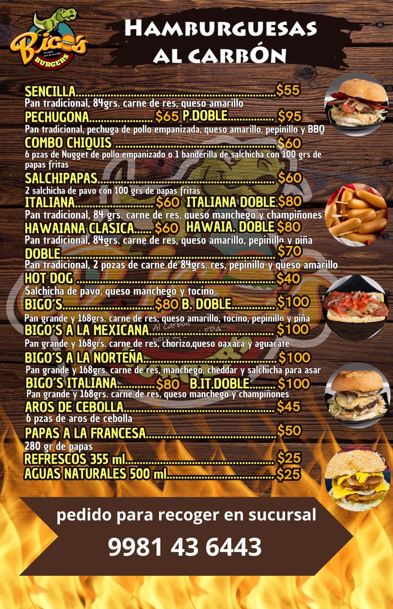

Bigos burger un lugar "especial"
Bigos burger
es un local de comida rapida
situado en cancun ,QROO
actualmente cuenta con dos sucurales, mas adelante hablare de ellos
El origen y el avance
"Origenes"
"No siempre fueron bigos burger",antes eran conocido como "brontos burger"
un local de comida rapida, pero el nombre era rentado, pero podrian usar su nombre
y asi surgio
"Brontos burger" con varios locales,(en concreto 4 O 5a ese nombre) donde se vendia comida rapida
(digo vendia porque no se que vende hoy en dia) y entre esas sucursales se encontraba
Barrio maya
era un local como cualquier otro pero que con el tiempo cambiaria
a uno de los que dueños le dieron la opcion de quedarse con la sucursal , pero hablaremos de ello mas adelante pero entonces
Porque cambiaron?
con el paso del tiempo, se intento expandir a vaios lugares de cancun pero hubieron problemas y uno de ellos se llamo
pandemia,con la llegada del covid-19 surgierion problemas.
- el local lo habian cerado,(razon desconosida), ya no era rentable
- durante el inico de los aplicaciones de venta de comida en linea un problema su registro
- continuando con la anterior, debido a que no todos las sucursales eran accesibles a todo publico,(no todas las apps permitian llegar tan lejos)
ademas , ya no se podia usar el nombre (era rentado , no era suyo),parecia el fin ,pero habia otra opcion el "reinicio"
El comienzo de un nuevo lugar
debido al cierre se tuvieron que separarse creando otro local de comida rapida y haci surguio en el año 2020(10 años despues )
Bigos burger
(la razon del nombre es privada), con un nuevo sucursal surgieron nuevas adversidades y nuevas oportunidades,pero primero tenian que cambiar el nombre y cambiar la mascota, porque si ,la mascota de brontos esta registrado a esa empresa y tuvieron que crear otrA mascota,pero alguien se quedo,( al final la razon se desconose), pero sigio en el local de barrio maya,que fue la sucursal con el nombre cambiado.
La expancion
con bigos en desarollo,se les ocurio una idea ,expandirse con otra sucursal y asi surgio
Heroes
pero no se puede hablar de ellos sin hablar de un fracaso
Coba, el primer fracaso
con la idea de expancion en el año 2021 (un año despues) se fundo una sucursal ubicado en la (Coba) o tambien llamado bigos coba pero lamentablemente la venta no era favorable, causando que no fuera accesible pagar la renta mensual haci que se tubieron que ir(el local se comvirtio en un puesto de piza si no mal recuerdo) eso es todo... pero no sin fundar el local que suplantaria a la sucursal fallida
Heroes... ahora si :)
con un fracaso en la memoria se fundo en en el año 2022 (un año despues del fracaso...) se fundo bigos Heroes
(ubicado en la AV niños Heroes)pero como con barrio maya, la parillera que trabajaba en la Coba se traspaso a
la ubicacion de la niños Heroes,pero este local era .... distinto, el local no le pertenecia al encargado
del de barrio maya, si no a alguien mas...cercano,pero fue el comienzo de una serie de"experimentos"
por haci decirlo, primero con la idea de innovar se lo ocurrio una idea.
desayunos
, porque que mejor que tener para poder desayunar que en donde puedes comer una buena hamburgesa que donde puedan tener un buen desayuno o un buen antojito pero la idea no se pudo sostener, duro solo unos 2 meses se tuvo que eliminar temporalmente (aunque hoy en dia sigen los desayunos, al parecer no desidieron,jajaj)Conclucion: :)
bigos burger no es como cualquier otro local de comida rapida, claro es otro puesto de comida de rapida, no es mas grande que maccdonal ni mas dinamico que burger king ,pero tiene una "escencia" que le da una caracteristica unica , que la distinge de los demas,.
| Sucuersales | Imagen(es) del logo | Imagen(es) del menu(us) | |
| Barrio maya |
 |
 |  |
| Niños Heroes |
 |
|
SI, son los mismos menus